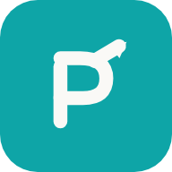
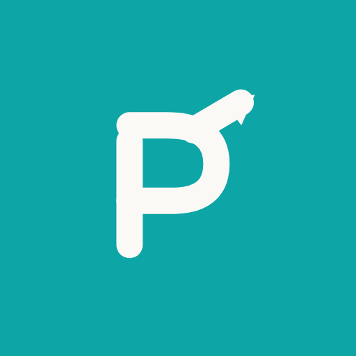

Brand identity · 2026
ProofPath
An identity built around evidence, clarity, direction and progress. A continuous path draws the letter P, then rises into a forward arrowhead — verified information becoming actionable.
01 · The symbol
A continuous path from evidence to action
One unbroken monoline constructs the P: a grounded vertical stem and a structured bowl that holds the evidence. The upper arc extends beyond the letterform and terminates in an integral arrowhead — the moment a verified claim becomes a directed next step. Round terminals keep it human; the 3.7-unit stroke keeps it legible at 16px.
02 · Lockups
Primary, dark and monochrome
03 · Symbol variants
Standalone mark in every surface mode
04 · App icon & favicon
Recognizable from the browser tab to the home screen


05 · Palette
Restrained, warm, trustworthy
06 · Wordmark typography
DM Sans, weight contrast only
07 · Clear space & minimum size
Protect the mark
- Minimum symbol size: 16px in UI, 12mm in print.
- Clear space equals the symbol stem width × 2 on every side.
- Do not rotate, recolor outside the palette, add gradients or drop shadows.
- On photography, use the ink-tile or teal-tile favicon version, never the bare mark.
- The compact navigation lockup is symbol-only; never crop the arrowhead.
ProofPath brand system · generated by scripts/brand/ · vector sources in public/brand/ · guidelines in docs/brand/BRAND.md